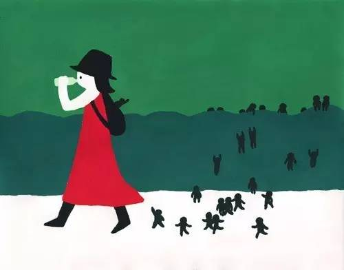
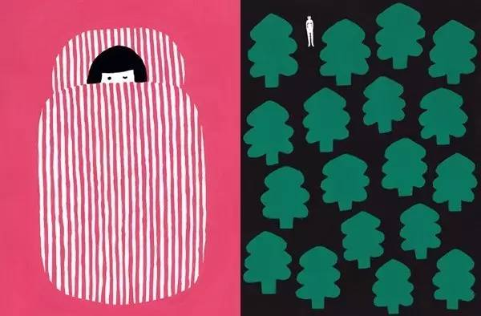
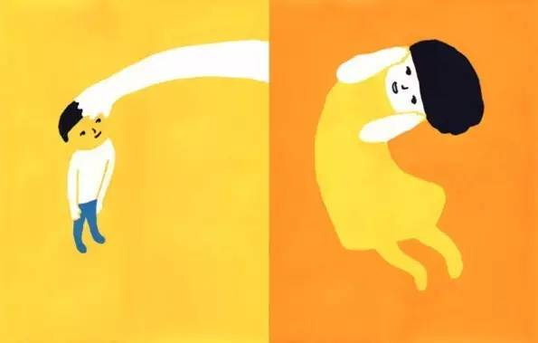

用好这十个句型，可以让你变得更聪明
既然语言可能限制我们思维，我们就有办法 —— 我们可以想办法让我们所使用的语言“限制着”我们往好的方向上走。以下，是十个特别简单的句型，却可以使我们变聪明 —— 而且还是真正的聪明，而不仅仅是“显得聪明”。
1. 真的吗？
遇到任何之前未知的概念、理论、现象、转述等等的时候，都可以问一下，问别人也好问自己也好，去问互联网上最大的大神 Google 也罢，反正要问，且不止一次地问：真的吗？这个步骤不可或缺。缺了它，就等于缺了心眼。事实上，求真，早就应该成为一种基础习惯。
2. 不是一回事儿吧？
婚姻和爱情不是一回事儿吧？读书和上学不是一回事儿吧？历史和历史书不是一回事儿吧？这个句型只不过是用来甄别概念与概念之间的差异，或巨大，或微妙，但重要的概念之间总是有差异的，如果是一回事儿，实在没必要有好几个名字。当然，生活也确实很奇怪，一模一样的东西，常常确实有两个名字，比如果子与油条，比如腐乳与臭豆腐……
3. 还有什么？
还有什么需要考虑？还有什么没考虑到？还有什么理由？还有什么结论？还有什么事实？还有什么？多问几次，绝对不吃亏。不仅要多问几次，还要反复问，隔几天问，隔几年问。这个句型，会让一个人不由自主地“思考更为全面”。
4. 不一定吧？
不确定性（Uncertainty）是这个世界的本质与真相。这世界唯一不变的是变化永在，唯一确定的是不确定性永存。这个句型在处理因果逻辑的时候格外重要。当有人断定 A 之所以发生是因为 B 的时候，不妨用这个句型作为起点：“不一定”吧？然后就可以接着思考了，还可能因为什么？—— 这是第三个句型和第四个句型的组合变体。
5. 除非……
这是个比看起来难用多了的句型。需要动用第三个句型，“还有什么？”；不仅如此，还要逐一排查，最终找到那个原本可能没有考虑到，但最终是最重要的一个因素…… 每次能够正确使用这个句型，都意味着说大脑完成了一系列的高难动作。

6. 没法比吧？
定义、分类、比较、因果，是日常生活中反复使用，反复组合使用的基本逻辑框架。“X 和 Y 没法比吧？” 就是用来处理比较的核心：被比较的双方应该属于同一范畴，拥有相同的属性。苹果和桔子，都是水果（同一范畴），都可以吃（同一属性），所以，可以比较哪个更好吃。苹果和袜子，是没办法放到一起的，也没办法放到一起去比较什么……
7. 本质上来看……
穿过表象看透实质，是最重要的思维本领。经常正确地使用这个句型，会不由自主地强迫自己多想想（进一步思考）。“嗯，看起来是这么回事儿…… 可实际上呢？” 抑或，“嗯，那是肤浅的理解，那么本质上是怎么回事儿呢？”
8. 最重要的是……
这个句型太重要了，反复使用这个句型甚至可以锤炼自己的价值观。在因果关系分析中，要找到众多理由中最重要的理由；在概念的使用中，要早到最不应该犯的错误；在比较中，要知道最重要的判断标准是什么；在分析现象的时候，要看到最本质的内容（第七个句型的变体）……

9. 没那么简单吧？
有些事儿确实很简单，但更多的时候，人们喜欢过分简单化。第二个句型（不是一回事儿吧？）之所以有用，就是人们倾向于过分简单化，乃至于把原本有重要差异的概念混淆起来使用（偷懒或者说图省事儿），乃至于不知不觉落入陷阱。如果一切过于顺利，问自己一句：“没那么简单吧？”常常可能有意外收获。
10. 哪儿那么复杂啊？
有些事儿真的没那么复杂。把简单的事儿复杂化，是很多人“刷存在感”的一种重要方式罢，因为这样会显得很聪明。说来有趣，很多复杂的事情，深入研究之后就会发现其实可以很简单。这里的前提就是，要在深入研究之后觉得简单才真正有意义。在没有深入研究之前，第九个句型更为适用；在深入研究之后，若是没有第十个句型的应用，很可能反过来说明那研究不够深入。

总结一下，以下十个句型，就是值得在生活中反复使用，最终做到“不经意之间依然可以自如地使用”。脑力和体力一样，可以通过大量“运动”获得更多力量。
1.真的吗？
2.不是一回事儿吧？
3.还有什么？
4.不一定吧？
5.除非……
6.没法比吧？
7.本质上来看……
8.最重要的是……
9.没那么简单吧？
10.哪儿那么复杂啊？
图片 / 佐藤香苗
来源：新生大学（xinshengdaxue）